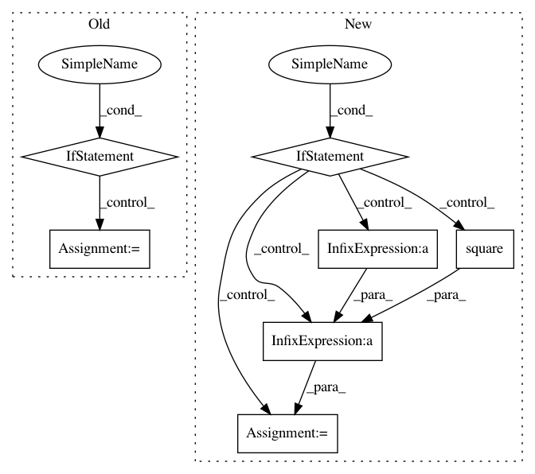

f2fa9bd74d0141c2869d2090ed28fa4f9ffa49e4,GPy/likelihoods/noise_models/binomial_noise.py,Binomial,_moments_match_analytical,#Binomial#Any#Any#Any#,37
Before Change
mu_hat = v_i/tau_i + data_i*phi/(Z_hat*np.sqrt(tau_i**2 + tau_i))
sigma2_hat = 1./tau_i - (phi/((tau_i**2+tau_i)*Z_hat))*(z+phi/Z_hat)
elif isinstance(self.gp_link,gp_transformations.Step):
Z_hat = None
mu_hat = None
sigma2_hat = None
return Z_hat, mu_hat, sigma2_hat
After Change
mu_hat = v_i/tau_i + data_i*phi/(Z_hat*np.sqrt(tau_i**2 + tau_i))
sigma2_hat = 1./tau_i - (phi/((tau_i**2+tau_i)*Z_hat))*(z+phi/Z_hat)
elif isinstance(self.gp_link,gp_transformations.Heaviside):
a = data_i*v_i/np.sqrt(tau_i)
Z_hat = std_norm_cdf(a)
N = std_norm_pdf(a)
mu_hat = v_i/tau_i + data_i*N/Z_hat/np.sqrt(tau_i)
sigma2_hat = (1. - a*N/Z_hat - np.square(N/Z_hat))/tau_i
if np.any(np.isnan([Z_hat, mu_hat, sigma2_hat])):
stop
return Z_hat, mu_hat, sigma2_hat
In pattern: SUPERPATTERN
Frequency: 3
Non-data size: 7
Instances
Project Name: SheffieldML/GPy
Commit Name: f2fa9bd74d0141c2869d2090ed28fa4f9ffa49e4
Time: 2013-09-16
Author: james.hensman@gmail.com
File Name: GPy/likelihoods/noise_models/binomial_noise.py
Class Name: Binomial
Method Name: _moments_match_analytical
Project Name: SheffieldML/GPy
Commit Name: 00d335444d91ffdd75c9a0d921f8f0dbe2594ea9
Time: 2013-09-14
Author: lawrennd@gmail.com
File Name: GPy/kern/parts/rational_quadratic.py
Class Name: RationalQuadratic
Method Name: dK_dX
Project Name: SheffieldML/GPy
Commit Name: 9fb090a5085f61c6555d9d6e850c5fc6d7c26007
Time: 2013-04-26
Author: james.hensman@gmail.com
File Name: GPy/kern/rbf.py
Class Name: rbf
Method Name: _K_computations